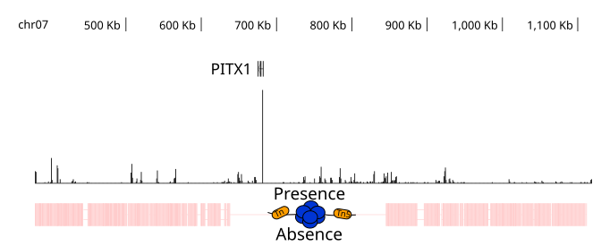

Genome-Wide Variation Between Freshwater and Marine Stickleback
Pairwise maine and freshwater stickleback genome alignments were produced in AXT format with LASTZ and converted to CHAIN format with axtChain. AXT and CHAIN alignments were generated in both directions. The set of alignments were computed using the marine stickleback as the target genome which used the freshwater stickleback as the query genome. However, the second set of alignments were computed in reverse, this time with freshwater genome as the target with the marine stickleback as its query genome and further processed using chainSwap. LASTZ and axtChain were programmed into a wrapping script. All chains were merged and sorted with chainMergeSort. Finally the best alignments from chains are selected with chainNet using a red-black trees algorithm to keep track of areas of a chromosome are already covered until there are no bases left and istinguish duplicated from nonduplicated regions. The resulting file is hierarchical collection of chains, with the highest-scoring non-overlapping chains on top, and gaps filled by possible lower-scoring chains called a NET. Nets are single-coverage target genomes, but not for query genomes unless it has been filtered to be single-coverage on both target and query. We generated reciprocal-best netted chains our pairwise netted chains by writting an wrapping bash script. All programs to process chains and nets are open sourced UCSC Kent Utilities devloped to examines genomic duplications, deletions, and rearrangements of the first whole-genome comparisons between human and mouse J Kent, 2003.Marine Freshwater Hybrid Crosses
Two different F1 hybrid (Freshwater x Marine) stickleback fish were crossed from Matadero Creek with Little Campbell and Rabbit Slough with Lake Matanuska. A Summary Table of populations sampled and libraries sequenced to investigate each allele are described in panel B. We generated ATAC-Seq, RNA-Seq, and WGS libraries to screen for allele specific enhancers near regions of increased chromatin accessibility that could perhaps be regulating differential gene expression. We perform a Fisher's Exact Test genome-wide to determine statistical significance if heterogygous SNPs sites are differentially increased or decreased in chromatin accessibility are enhancers or regulatory elements nearby differentially expressed genes.

Differential Chromatin Accessibility and Gene Expression
 After genotyping 18 stickleback genomes and 4 transcriptomes, 9,468,248 SNPs genome wide were detcted. Testing each heterogygous SNPs site pinpointed to this PLXNA4 gene located near the end of chromosome 4 spanning a little more than 200 kb.
After genotyping 18 stickleback genomes and 4 transcriptomes, 9,468,248 SNPs genome wide were detcted. Testing each heterogygous SNPs site pinpointed to this PLXNA4 gene located near the end of chromosome 4 spanning a little more than 200 kb.In the F1 hybrid WGS data is heterozygous for both SNPs. However, in the atac-seq cross, the genotype is homozygous suggesting one of the alleles is differentially increased in chromatin accessibility, while the other allele is completely closed. What is even more interesting is nearby in the rna-seq data shows gene expression is clearly downregulated in one allele and increased gene expression with the other allele.
What's PLXNA4? PLXNA4 is a receptor for proteins SEMA3A and SEMA6, which mediate the effects of multiple semaphorins, including controlling diverse aspects of the nervous system development and plasticity, ranging from axon guidance and neuron migration to synaptic organization Sun et al., 2013. PLXNA4 has recently been identified in genome wide association studies (GWAS), as a novel genetic player associated with Alzheimer's disease Han et al., 2018.
Raw Data
Genomic Software Projects
Lowe Lab Software
Chromosome Spanning Assemblies
Hi-C libraries are commonly used today for assemblying draft genomes largely because these libraries can provide insight into 3-D chomosome structures and investigate chromosome interactions in close proximity. A freshwater three-spine stickleback Hi-C library previously provided a noticeable improvement to the Gasterosteus aculeatus freshwater assembly (CL Peichel, 2017) However, Karyotype characterization in sticklebacks have previously reported to have a high divergence chromosomal morphology (Kitano 2009, Ross 2009) When we mapped previously generated freshwater Hi-C data to both the freshwater assembly and the marine stickleback genome revealed identical heat map signatures ¥cite{pmid28821183}. Similarly when we mapped marine H-C data against the freshwater and marine genomes respectfully, produced the same Hi-C heat map profiles suggesting both assemblies are high contiguity chromosome level assemblies, but no large detectable chromosomal rearrangements or translocations.
Marine Freshwater Chomosomal Inversions
Performing marine to freshwater genome alignments and comparisons reveal consistent findings with previous work which identified 3 marine freshwater chromosome inversions located on chromosomes 1, 11, and 21 (Jones et al. 2012). On the marine stickleback genome coordinates, the inversions span roughly from 26.630.694 to 27,081,942 on chromosome one, 6,311,704 to 6,740,674 on chromosome eleven, and 9,570,312 to 11,281,238 on chromosome twenty-one.
Presence Absence
PITX1 contains multiple regulatory switches that allow for transcription of that gene in multiple tissues.